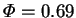

IT MUST be stressed that the value of the mass transfer rate factor () employed in chapter 5 was much larger than those values likely to be encountered in air-water vapour systems at ordinary temperatures. It was chosen large so as to show more clearly the effects of mass transfer (enthalpy interdiffusion and transpiration); to show that the numerical method was capable of handling these; and to show that the narrow cavity limiting solution (ch. 4) could apply--and, therefore, the conduction-diffusion regime exist--at a high mass transfer rates.
Indeed, in the experiments of McBain, Suehrcke & Harris
(unpub.) on the evaporation of free water into air at
20-40 C
and 75% relative humidity,
C
and 75% relative humidity,  did not exceed 0.012.
Given the not inconsiderable difficulty added to the solution of vapour
transport problems by the interdiffusion energy flux and the transpiration
boundary condition (§5.1), and noting
that both of these effects vanish with
did not exceed 0.012.
Given the not inconsiderable difficulty added to the solution of vapour
transport problems by the interdiffusion energy flux and the transpiration
boundary condition (§5.1), and noting
that both of these effects vanish with  , there is much motivation
for constructing an approximation for low mass transfer rates. This is the
task of the present chapter.
, there is much motivation
for constructing an approximation for low mass transfer rates. This is the
task of the present chapter.
A rational approximation is one that is exact in some limit (Van Dyke 1964,
pp 2-3). The limit considered here is,
of course, small  . The superiority of this approach over the
dropping, however intuitive or judicious,
of `negligible' terms should be obvious; in particular, the accuracy of
a rational approximation can always be investigated
by examining more terms in the asymptotic expansion.
. The superiority of this approach over the
dropping, however intuitive or judicious,
of `negligible' terms should be obvious; in particular, the accuracy of
a rational approximation can always be investigated
by examining more terms in the asymptotic expansion.
Several irrational approximations for vapour transport have already been uncovered in the literature:
There are other possibilities for the small parameter with which to
characterize low mass transfer rates, such as the maximum vapour mass fraction
or Spalding's (1960) driving force for mass transfer,